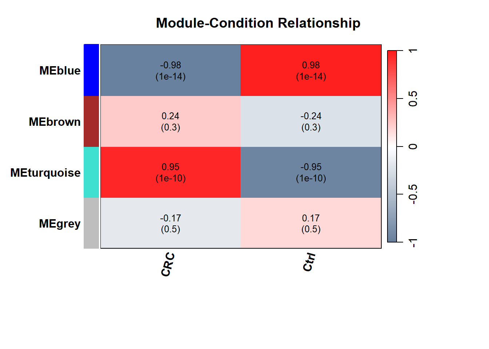
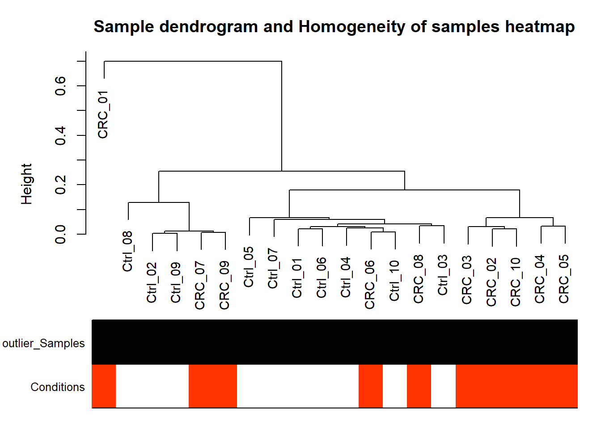
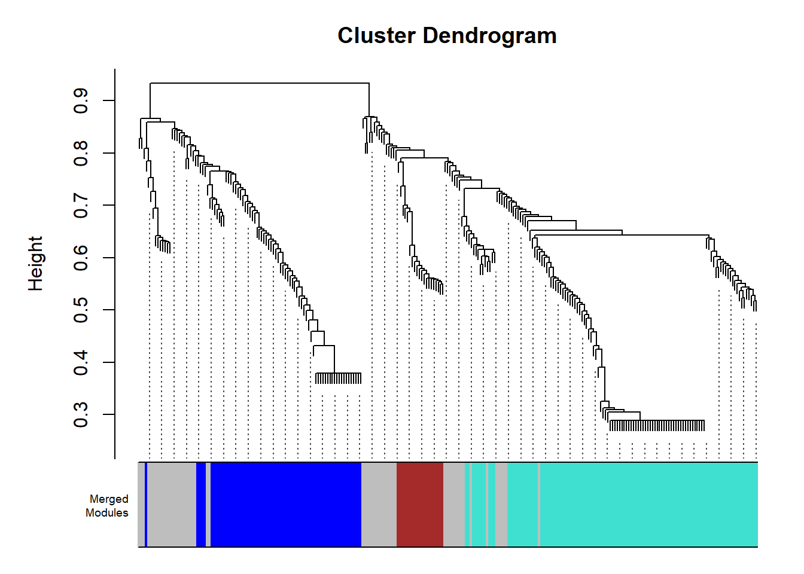
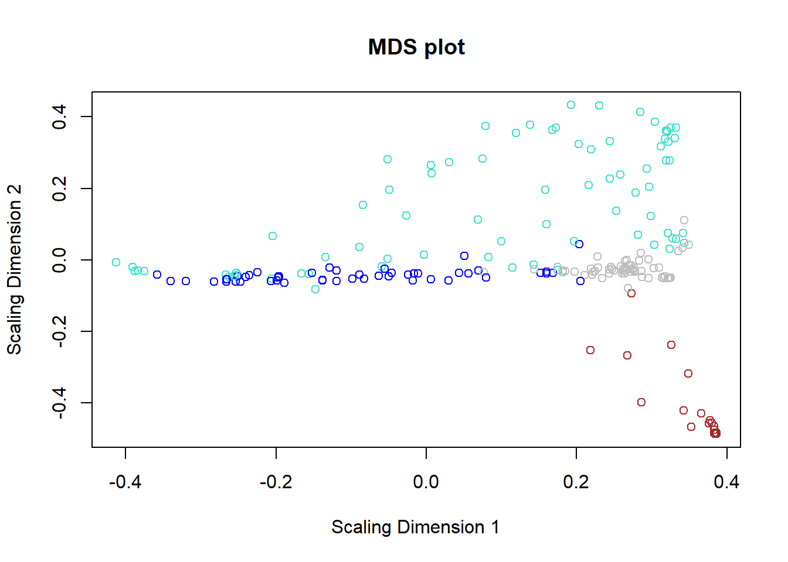
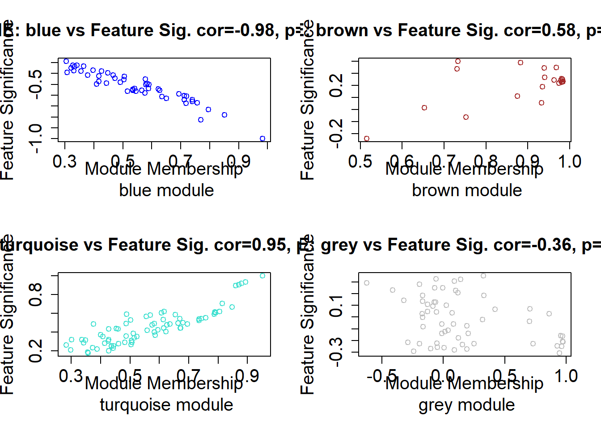

Section 7 WGCNA Visualizations
Description: This pipeline performs all visualizations for the WGCNA pipeline.
Project Initialization
#Sets the working directory and creates subfolders for organizing outputs.
mypath= "C:/Users/USER/Documents/Github/CRC_project/"
dir.create("output")
dir.create("plots")
dir.create("input")#load packages
library(gtools)
library(pROC)
library(ape)
library(ggdendro)
library(WGCNA)
library(stats)
library(flashClust)
library(plyr)
library(dplyr)
library(tidyr)
library(purrr)
library(tibble)
library(tidyverse)
library(gridExtra)
library(gplots)
library(ggplot2)
library(circlize)
library(ComplexHeatmap)
allowWGCNAThreads() ## Allowing multi-threading with up to 4 threads.Prepare Data
#load data
dir= paste0(mypath, "output/")
# expression data
data= read.csv(paste0(mypath,"input/data_for_downstream.csv"))
data = data |> column_to_rownames(colnames(data)[1])
# differential expression file
de= read.csv(paste0(mypath, "output/DE_sig.csv"))
de=de |> filter(abs(logFC) >= log2(3))
module_eigengenes= read.csv(paste0(mypath,"output/module_eigengenes.csv")) |> column_to_rownames("X")
group_dist= gsub("_.*", "", colnames(data))
group_levels= unique(group_dist)
group_colors <- c("#fc8d62", "#66c2a5")
names(group_colors) <- group_levels
#change type to numeric
data[]= lapply(data, as.numeric)
datExpr= t(data) #samples become in row
#This function checks data for missing entries, entries with weights below a threshold, and zero-variance genes,
goods <- goodSamplesGenes(datExpr, verbose = 3)## Flagging genes and samples with too many missing values...
## ..step 1Prepare Metadata
#metadata
metadata= data.frame(sample= colnames(data) ,
condition= group_dist,
cond_binary= as.numeric(binarizeCategoricalColumns(group_dist,
levelOrder= list(group_levels[2], group_levels[1]))[[1]]))
#metadata= read.csv("input/metadata_test.csv" )
metadata = metadata |> column_to_rownames("sample")
metadata$condition= factor(metadata$condition, levels = group_levels)
design= model.matrix(~ 0+condition , metadata)
head(design)## conditionCRC conditionCtrl
## CRC_01 1 0
## CRC_02 1 0
## CRC_03 1 0
## CRC_04 1 0
## CRC_05 1 0
## CRC_06 1 0Set parameters and run main WGCNA function
#parameters for WGCNA
power= 4
minModuleSize = 20
metadata_binary= design
#Run WGCNA
net = blockwiseModules(datExpr, corType = "pearson", maxBlockSize = 5000,
networkType = "signed", power = power, minModuleSize =minModuleSize,
mergeCutHeight = 0.25,
numericLabels = F, saveTOMs = TRUE,
pamRespectsDendro = FALSE, saveTOMFileBase = "TOM")7.1 Module-phenotype Correlation Plot
#Module trait correlation (visualize which module associated with what phenotype)
#We apply pearson correlation between metadata traits (conditions) and module eigen gene (1st principal component of module genes/metabolites)
plotheatmap=function(datExpr, design, module_eigengenes){
traits= design |> as.data.frame()
head(traits)
# Define numbers of genes and samples
nSamples <- nrow(datExpr)
nGenes <- ncol(datExpr)
module.trait.corr <- WGCNA::cor(module_eigengenes, traits, use = 'p')
module.trait.corr.pvals <- corPvalueStudent(module.trait.corr, nSamples)
#module_trait heatmap of WGCNA package
# correlations and their p-values
textMatrix = paste(signif(module.trait.corr, 2), "\n(", signif(module.trait.corr.pvals, 1), ")",
sep = "")
dim(textMatrix) = dim(module.trait.corr)
par(mar = c(6, 6, 4, 6))
color= colorpanel(250, "#667F9C", "white", "#FE1B1B")
#color= greenWhiteRed(50)
# Display the correlation values within a heatmap plot
labeledHeatmap(Matrix = module.trait.corr, xLabels = gsub("condition", "", names(traits)),
yLabels = names(module_eigengenes),
ySymbols = names(module_eigengenes), colorLabels = FALSE, colors = color,
textMatrix = textMatrix, setStdMargins = T, cex.text = 0.8,
zlim = c(-1, 1),xColorWidth = 1 * strheight("M"),
yColorWidth = 1.5 * strwidth("M"),xColorOffset = strheight("M")/6,
yColorOffset = strwidth("M")/6, font.lab.x = 2, cex.legendLabel = 2,
font.lab.y = 2, xLabelsAngle = 75,
main = paste("Module-Condition Relationship"), plotLegend= TRUE)
}
#Display
plotheatmap(datExpr, design, module_eigengenes)
#Save
png("plots/heatmap_module_phenotype_cor.png", width = 4000, height = 4500, res= 600)
plotheatmap(datExpr, design, module_eigengenes)
dev.off()## png
## 27.2 Samples Dendrogram Plot
#Hierarchical clustering of samples, detect outlier samples,
#and association of sample with certain trait
plotDendroAndphenotype= function(data, metadata){
#Build adjacency matrix for samples
A = adjacency(data, type = "distance")
# this calculates the whole network connectivity
k = as.numeric(apply(A, 2, sum)) - 1
# standardized connectivity
Z.k = scale(k)
# Designate samples as outlying if their Z.k value is below the threshold
thresholdZ.k = -5 # often -2.5
# the color vector indicates outlyingness (red)
outlierColor = ifelse(Z.k < thresholdZ.k, "red", "black")
# calculate the cluster tree using flahsClust or hclust
sampleTree = flashClust(as.dist(1 - A), method = "average")
# Convert traits to a color representation: where red indicates high
# values
traitColors = data.frame(numbers2colors(as.numeric(metadata$cond_binary), signed = TRUE))
#dimnames(traitColors)[[2]] = "Inflammation_lvl"
datColors = data.frame(outlier_Samples = outlierColor, Condition= traitColors)
colnames(datColors)[2]= "Conditions"
# Plot the sample dendrogram and the colors underneath.
WGCNA::plotDendroAndColors(sampleTree, groupLabels = names(datColors), colors = datColors, cex.rowText = 5, main = "Sample dendrogram and Homogeneity of samples heatmap")
}
# Display
plotDendroAndphenotype(data,metadata)
# Save
png(paste0(mypath,"plots/WGCNA_dendrogram.png"), width = 8000, height = 6000, res= 600)
plotDendroAndphenotype(data, metadata)
dev.off()## png
## 27.3 Cluster Dendrogram Plot
plotDendro= function(){
plotDendroAndColors(net$dendrograms[[1]], net$colors,
paste0("Merged\n", "Modules"),
dendroLabels = FALSE,
addGuide = TRUE,
hang= 0.03,
cex.colorLabels = 0.6,
guideHang = 0.05)
}
# Display
plotDendro()
# Save
png(paste0(mypath,"plots/dendrogram_merged_modules.png"), width = 2200, height = 2500, res= 600)
plotDendro()
dev.off()## png
## 27.5 MDS plot
## TOM calculation: adjacency..
## ..will not use multithreading.
## Fraction of slow calculations: 0.000000
## ..connectivity..
## ..matrix multiplication (system BLAS)..
## ..normalization..
## ..done.cmd1=cmdscale(as.dist(dissTOM),2)
# Display
plot(cmd1,col=moduleColorsAutomatic,main="MDS plot",
xlab="Scaling Dimension 1",ylab="Scaling Dimension 2")
# Save
png(paste0(mypath,"plots/MDS_plot.png"), width = 2800, height = 3300, res= 600)
par(mfrow=c(1,1))
plot(cmd1,col=moduleColorsAutomatic,main="MDS plot",
xlab="Scaling Dimension 1",ylab="Scaling Dimension 2")
dev.off()## png
## 27.6 TOM plot for Selected Features
# Get Differentially expressed features
genes= de$X
# subset data to have only selected proteins
datExpr_subset= datExpr[,colnames(datExpr) %in% genes]
dissTOM_subset= 1 - TOMsimilarityFromExpr(datExpr_subset, power= power)## TOM calculation: adjacency..
## ..will not use multithreading.
## Fraction of slow calculations: 0.000000
## ..connectivity..
## ..matrix multiplication (system BLAS)..
## ..normalization..
## ..done.dendro_subset = hclust(as.dist(dissTOM_subset), method = "average")
module.gene.assign= net$colors
moduleColors_subset= module.gene.assign[names(module.gene.assign)%in% genes]
png(paste0(mypath,"plots/module_heatmap_TOM_PLOT_selected.png"), width = 2800, height = 3300, res= 600)
#myheatcol = colorpanel(250,'gold',"orange",'darkred')
myheatcol = colorpanel(250,'red',"orange",'lemonchiffon')
# Transform dissTOM with a power to enhance visibility
TOMplot(dissTOM_subset,
dendro_subset,
moduleColors_subset,col= myheatcol,
main = "Module Heatmap Plot")
dev.off()## png
## 2# Intramodular analysis: identifying genes with high Gene Significance (GS), i.e., strong association with the phenotype,
#and high Module Membership (MM), i.e., strong correlation with the module eigengene (first principal component).
datKME = signedKME(datExpr, module_eigengenes)
GS.lvl= read.csv(paste0(mypath,"output/gene.trait.corr.csv")) |> column_to_rownames("X")
modules_df= read.csv(paste0(mypath,"output/modules.csv"))
module.assign= read.csv(paste0(mypath,"output/gene_module_assignment.csv")) |> deframe() |> unlist()
dim(datKME)## [1] 263 4## [1] 263 27.7 Module Membership Vs Gene Significance Scatter plot
# Define plotting function
plot_MM_vs_GS <- function() {
colorOfColumn <- substring(names(datKME), 4)
selectModules <- colnames(modules_df)
# Set layout: 2 rows, N/2 columns
par(mar = c(5, 4, 4, 2) + 0.1)
par(mfrow = c(2, ceiling(length(selectModules) / 2)))
for (module in selectModules) {
if (!(module %in% module.assign)) {
message(paste("Skipping module", module, "- not found in module assignment"))
next
}
column <- match(module, colorOfColumn)
restModule <- moduleColorsAutomatic == module
if (sum(restModule) > 0) {
verboseScatterplot(
datKME[restModule, column],
GS.lvl[restModule, 1],
xlab = paste("Module Membership\n", module, "module"),
ylab = "Feature Significance",
main = paste("kME:", module, "vs Feature Sig."),
col = module
)
} else {
message(paste("No matching entries for module:", module))
}
}
}
#Display
plot_MM_vs_GS()
#Save
png(paste0(mypath,"plots/mm_vs_sig.png"), width = 800, height = 700)
plot_MM_vs_GS()
dev.off()## png
## 2## R version 4.4.1 (2024-06-14 ucrt)
## Platform: x86_64-w64-mingw32/x64
## Running under: Windows 10 x64 (build 19045)
##
## Matrix products: default
##
##
## locale:
## [1] LC_COLLATE=English_United States.utf8
## [2] LC_CTYPE=English_United States.utf8
## [3] LC_MONETARY=English_United States.utf8
## [4] LC_NUMERIC=C
## [5] LC_TIME=English_United States.utf8
##
## time zone: Africa/Cairo
## tzcode source: internal
##
## attached base packages:
## [1] grid stats graphics grDevices utils datasets methods
## [8] base
##
## other attached packages:
## [1] gplots_3.1.3.1 gridExtra_2.3 flashClust_1.01-2
## [4] ggdendro_0.2.0 ape_5.8 pROC_1.18.5
## [7] gtools_3.9.5 WGCNA_1.72-5 fastcluster_1.2.6
## [10] dynamicTreeCut_1.63-1 ggrepel_0.9.6 viridis_0.6.5
## [13] fields_16.2 viridisLite_0.4.2 spam_2.10-0
## [16] biomaRt_2.61.2 ComplexHeatmap_2.21.0 circlize_0.4.16
## [19] RColorBrewer_1.1-3 memoise_2.0.1 caret_6.0-94
## [22] lattice_0.22-6 pls_2.8-3 Rserve_1.8-13
## [25] MetaboAnalystR_3.2.0 cowplot_1.1.3 DT_0.33
## [28] openxlsx_4.2.6.1 lubridate_1.9.3 forcats_1.0.0
## [31] stringr_1.5.1 purrr_1.0.2 readr_2.1.5
## [34] tidyr_1.3.1 ggplot2_3.5.1 tidyverse_2.0.0
## [37] dplyr_1.1.4 plyr_1.8.9 tibble_3.2.1
##
## loaded via a namespace (and not attached):
## [1] matrixStats_1.3.0 bitops_1.0-7 httr_1.4.7
## [4] doParallel_1.0.17 tools_4.4.1 backports_1.5.0
## [7] R6_2.5.1 lazyeval_0.2.2 GetoptLong_1.0.5
## [10] withr_3.0.0 prettyunits_1.2.0 preprocessCore_1.67.0
## [13] cli_3.6.3 Biobase_2.64.0 textshaping_0.4.0
## [16] Cairo_1.6-2 labeling_0.4.3 sass_0.4.9
## [19] proxy_0.4-27 systemfonts_1.2.3 foreign_0.8-86
## [22] siggenes_1.79.0 parallelly_1.38.0 scrime_1.3.5
## [25] maps_3.4.2 limma_3.61.5 rstudioapi_0.16.0
## [28] impute_1.79.0 RSQLite_2.3.7 generics_0.1.3
## [31] shape_1.4.6.1 RApiSerialize_0.1.3 crmn_0.0.21
## [34] crosstalk_1.2.1 zip_2.3.1 GO.db_3.19.1
## [37] Matrix_1.7-0 S4Vectors_0.42.1 lifecycle_1.0.4
## [40] yaml_2.3.10 edgeR_4.3.5 recipes_1.1.0
## [43] BiocFileCache_2.13.0 blob_1.2.4 crayon_1.5.3
## [46] KEGGREST_1.45.1 magick_2.8.4 pillar_1.11.0
## [49] knitr_1.48 fgsea_1.31.0 rjson_0.2.21
## [52] future.apply_1.11.2 codetools_0.2-20 fastmatch_1.1-4
## [55] glue_1.7.0 pcaMethods_1.97.0 data.table_1.15.4
## [58] vctrs_0.6.5 png_0.1-8 gtable_0.3.5
## [61] cachem_1.1.0 gower_1.0.1 xfun_0.46
## [64] prodlim_2024.06.25 survival_3.6-4 timeDate_4032.109
## [67] iterators_1.0.14 hardhat_1.4.0 lava_1.8.0
## [70] statmod_1.5.0 ipred_0.9-15 nlme_3.1-164
## [73] bit64_4.0.5 progress_1.2.3 filelock_1.0.3
## [76] GenomeInfoDb_1.41.1 bslib_0.8.0 KernSmooth_2.23-24
## [79] rpart_4.1.23 colorspace_2.1-1 BiocGenerics_0.52.0
## [82] DBI_1.2.3 Hmisc_5.1-3 nnet_7.3-19
## [85] tidyselect_1.2.1 bit_4.0.5 compiler_4.4.1
## [88] curl_5.2.1 httr2_1.0.2 htmlTable_2.4.3
## [91] xml2_1.3.6 plotly_4.10.4 stringfish_0.16.0
## [94] bookdown_0.40 checkmate_2.3.1 scales_1.3.0
## [97] caTools_1.18.2 rappdirs_0.3.3 digest_0.6.36
## [100] rmarkdown_2.27 XVector_0.44.0 htmltools_0.5.8.1
## [103] pkgconfig_2.0.3 base64enc_0.1-3 highr_0.11
## [106] dbplyr_2.5.0 fastmap_1.2.0 rlang_1.1.4
## [109] GlobalOptions_0.1.2 htmlwidgets_1.6.4 UCSC.utils_1.1.0
## [112] farver_2.1.2 jquerylib_0.1.4 jsonlite_1.8.8
## [115] BiocParallel_1.39.0 ModelMetrics_1.2.2.2 magrittr_2.0.3
## [118] Formula_1.2-5 GenomeInfoDbData_1.2.12 dotCall64_1.1-1
## [121] munsell_0.5.1 Rcpp_1.0.13 stringi_1.8.4
## [124] zlibbioc_1.50.0 MASS_7.3-60.2 parallel_4.4.1
## [127] listenv_0.9.1 Biostrings_2.72.1 splines_4.4.1
## [130] multtest_2.61.0 hms_1.1.3 locfit_1.5-9.10
## [133] igraph_2.0.3 reshape2_1.4.4 stats4_4.4.1
## [136] evaluate_0.24.0 RcppParallel_5.1.8 tzdb_0.4.0
## [139] foreach_1.5.2 qs_0.26.3 future_1.33.2
## [142] clue_0.3-65 e1071_1.7-14 glasso_1.11
## [145] class_7.3-22 ragg_1.3.2 AnnotationDbi_1.67.0
## [148] ellipse_0.5.0 IRanges_2.38.1 cluster_2.1.6
## [151] timechange_0.3.0 globals_0.16.3